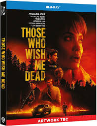

THOSE WHO WISH ME DEAD
This is a 2021 American neo-Western action thriller film directed by Taylor Sheridan with a screenplay by Michael Koryta, Charles Leavitt, and Sheridan, based on Koryta's novel of the same name. The film follows a boy (Finn Little) who witnesses the murder of his father and goes on the run with a smokejumper (Angelina Jolie) in the Montana widerness to escape a pair of assassins (Nicholas Hoult and Aidan Gillen) hired to silence him.
Summary of the movie
Release date: May 5, 2021 (Seoul), May 14, 2021 (United States)
Directed by: Taylor Sheridan
Running time: 100 minutes
Country United States
Language: English
Box office: $23.4